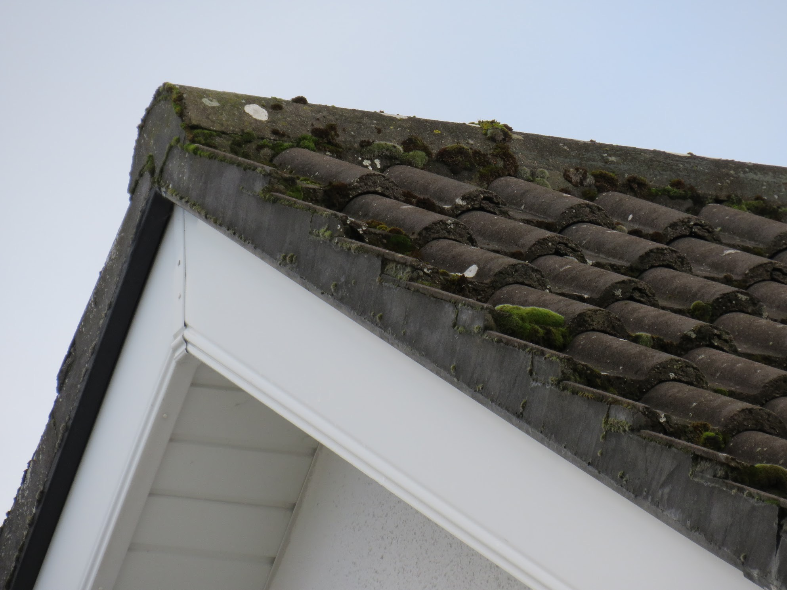
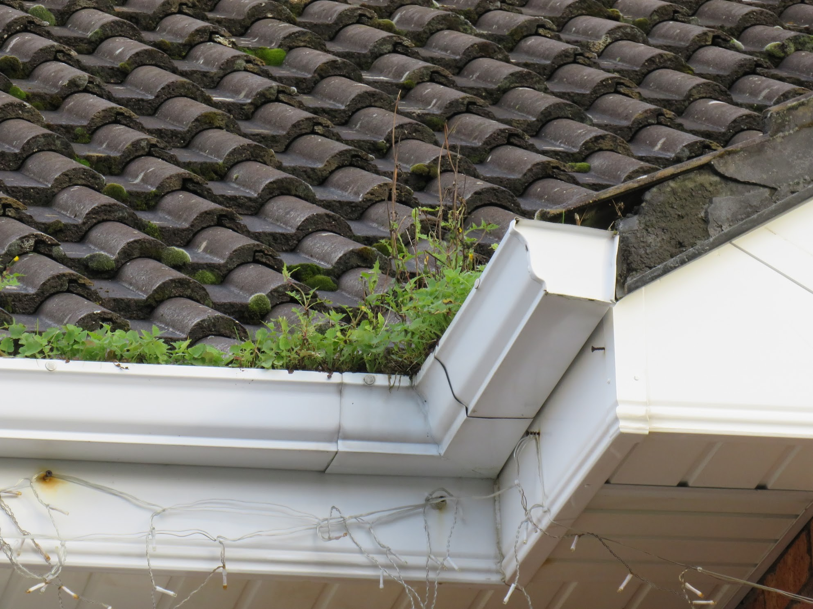
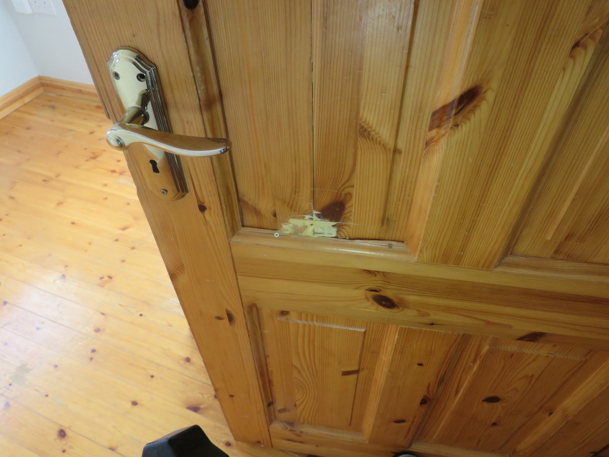
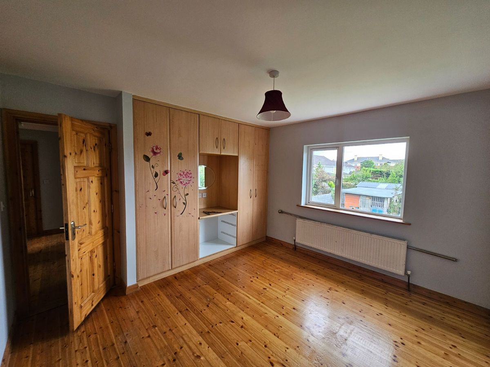
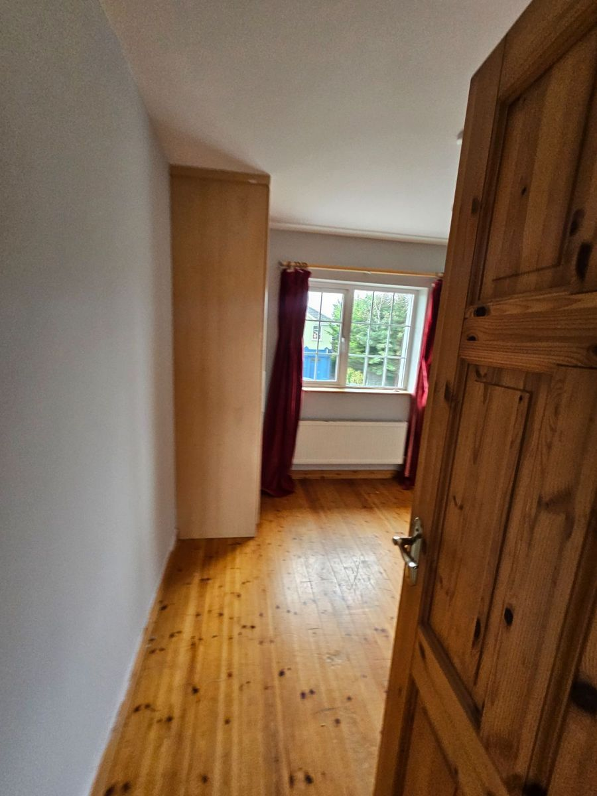
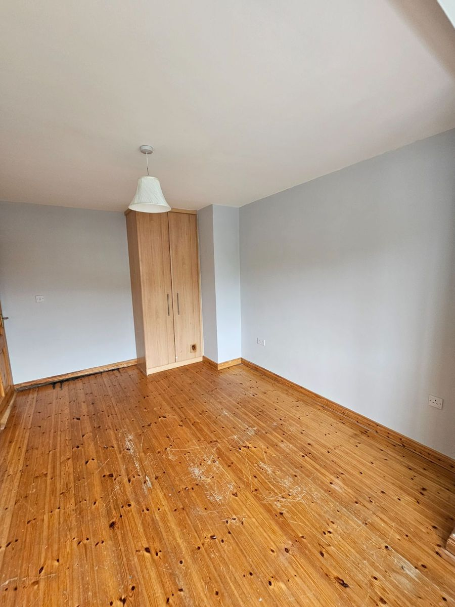

Exterior Work
- Inspect roof tiles, replacing any cracked or missing units.
- Refresh roof pointing where mortar has slipped.
- Fill the gap in the chimney stack to prevent water ingress.
Current Photos




Interior Work
- Remove existing wardrobes and fittings.
- Install new skirting boards (white) to match the flooring finishes.
- Fit fresh architraves (white) around doors for a neat, low-profile outline.
- Finish with durable paint and lightly caulk joins for a seamless look.
- Remove loose wires and fill holes and gaps in walls.
Current Photos




